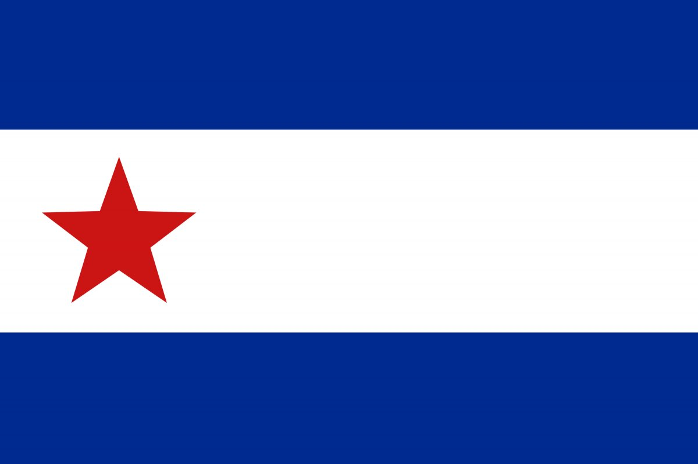

Los Hilos de Monik
De la bandera cubana
Publicado el 24 de agosto de 2020 - 16 tweets - Hilo original en Twitter
1
¿Qué sabes acerca de la creación de la bandera cubana?
Seguramente esto: diseñada por Narciso López, dibujada por Miguel Teurbe Tolón, y cosida por su esposa Emilia. Bandera nacida como anexionista y luego rebautizada.
Pos... es mucho más complicado que eso.

2
Primero: a Narciso López no se le “ocurrió” la bandera así como así. Esta fue la 2da que ideó.
La actual bandera cubana es un perfeccionamiento de una anterior, diseñada como enseña de la Conspiración de la Mina de la Rosa Cubana.
3
Narciso López fue gobernador de Maracaibo, el último reducto español en Venezuela.
Cuando triunfa la independencia venezolana en 1823, los españoles fueron evacuados a Santiago de Cuba.
Se casó con una hermana del Conde de Pozos Dulces y en 1827 es destinado a España.
4
En las guerras carlistas, salvó la vida a Gerónimo Valdés, quien lo ubicó en una comisión internacional para eliminar los crímenes de guerra. Derrotó al Cnel. Carlos O’Donnell, ganándose el odio de su pariente Leopoldo O’Donnell
(esto influyó luego; ambos fueron Cpt. Grales)
Vea el tweet sobre Gerónimo Valdés
,
5
En 1836, cuando los diputados cubanos fueron expulsados de las Cortes, Narciso López convocó a todos los oficiales criollos a dimitir en masa.
Cuando O’Donnell llega como Cptan General a Cuba, despoja a López de sus cargos militares y le obliga a abandonar la milicia.
6
Esta acción desencadenó la 1ra conspiración protagonizada por Narciso López (aunque ya había participado en la del Águila Negra): la Conspiración de la Mina de la Rosa Cubana (1847) que tuvo lugar en una mina propiedad de su esposa, en Manicaragua.
Y ahí surge la 1ra bandera.
7
La bandera estaba compuesta por los colores republicanos: azul, blanco y rojo, según cuenta Cirilo Villaverde, íntimo amigo de López (llegó a llamar a su hijo Narciso)
Súper básica, ¿verdad?
Bueno, pues Narciso López la “mejoró” luego un poco.
8
El propósito de la conspiración era separar a Cuba de España en el caso de que -debido a las presiones británicas- se aboliera la esclavitud.
Tenían conspiradores en Trinidad, Sancti Spiritus, Cienfuegos y Matanzas.
Al parecer, cada uno hizo versiones propias de la bandera.

9
A la vez, el Club de La Habana estaba preparando otra conspiración, de carácter anexionista (con la que López también tuvo que ver) y ellos, por supuesto, también tenían su bandera. Que recuerda mucho a la de EE.UU.
10
Ambas conspiraciones fracasaron y Narciso López tuvo que huir hacia los Estados Unidos, disfrazado de marinero.
Justo a tiempo, pues el gobierno español lo condena en rebeldía a muerte por fusilamiento.
11
Cuando decimos que Narciso López era anexionista, no se le está juzgando correctamente.
López era un liberal, que hizo campaña tanto con los sureños (apelando a la esclavitud) como a los norteños (alabando sus libertades) para obtener apoyo en su lucha.
12
Desde su llegada a EE.UU. López se unió al círculo de exiliados independentistas en New York, y no tanto a los anexionistas liderados por Cristóbal Madan.
Y sus varios intentos de expedición fueron frustrados por el propio gobierno estadounidense.
13
En fin, que ya en NY pide ayuda a Miguel de Teurbe para diseñar una nueva bandera. Basada en la anterior, pero con algunas modificaciones: 3 franjas azules y 2 blancas, en lugar de 3 franjas. Un triángulo rojo en lugar de cuadrado, lo cual se ha visto como influencia masónica.
14
Pero lo más interesante es la estrella.
Siempre se ha dicho que la intención de la estrella era reflejar que sería una más en la bandera estadounidense.
Pero hay una interpretación distinta, con la cual me identifico mucho más.

15
La estrella en realidad sería un símbolo patriótico inspirado en la poesía de José María Heredia:
1823: "y la estrella de Cuba eclipsada por un siglo de horror queda ya"
1825: “Cuando Cuba sus hijos reanime, y su estrella miremos brillar”
16
Cuando Narciso López tomó Cárdenas y ondeó durante 12 hrs la bandera el 19 de mayo de 1850, trajo también consigo la Constitución Provisional de Cuba, que llamaba a Cuba “patria libre e independiente”
Tras su muerte, Cirilo Villaverde custodió la bandera original.